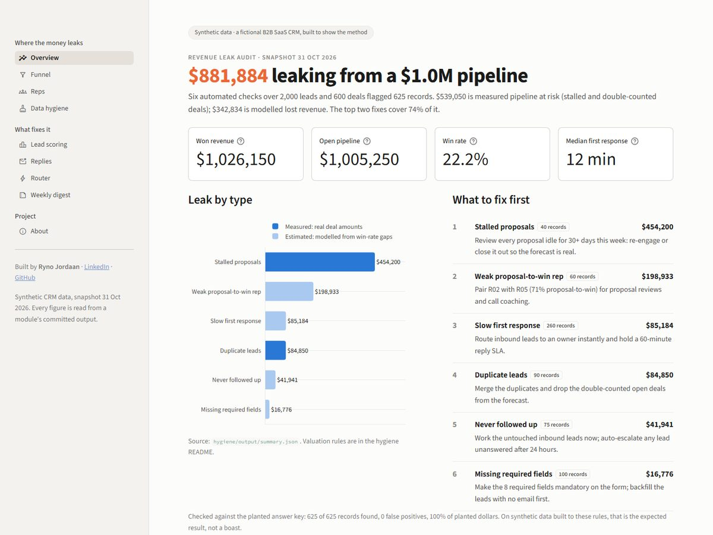

Revenue Leak Engine
Six checks found $881,884 leaking from a $1.0M pipeline. This is how I built them, what broke, and what the numbers do and don't prove.
The problem
Sales pipelines rarely lose money in one big event. They lose it quietly. A proposal goes 30 days without a call. An inbound lead waits two hours for a reply. The same company sits in the CRM twice, so the forecast counts one deal two times. Nobody sees these, because each one looks small on its own.
I spent three years in high-volume sales. My close rate rose once I fixed speed to lead and follow-up. This is the tool I wanted then: it finds the leaks and prices each one.
What I built
- A synthetic CRM with 2,000 leads, 600 deals and 1,500 email replies. Six leaks are planted at known counts, so every module can be graded.
- A hygiene check that finds all six leaks from the CRM data alone.
- Lead scoring with a plain-English reason for every score.
- A reply classifier using Claude Haiku. It sorts replies into five buckets so interested ones get answered first.
- A speed-to-lead router that validates, dedupes and assigns an inbound lead, then alerts the rep.
- A weekly brief written by Claude, and a nine-page dashboard.

Five decisions
The answer key stays out of the detectors
The generator writes an answer key of every planted record. Only the tests and evaluation scripts read it. The classifier drops the true label before any reply is sent to the model.
LLM results are cached, so the demo costs $0
Each classification is saved, keyed by a hash of the model, prompt and schema. A rerun with the same prompt is free. The dashboard reads saved files and never calls the API, so a visitor costs nothing.
The brief has a number check
Python computes every fact. Claude only writes the sentences. A checker then pulls every number out of the brief and looks it up in the facts file. If one is missing, Claude gets one retry. If that fails too, nothing is published.
Scoring is tested on the future
The model trains on leads created before June 2026 and is tested once on June to August. Features are frozen at the point a rep would see the score, so later replies can't leak the outcome.
The data is synthetic because of privacy law
A real CRM export is full of names and emails that I am not allowed to publish. A seeded generator gives data anyone can rebuild byte for byte, with leaks at known counts.
What broke, and the fix
The never-followed-up check found 74 of 75. I measured lead age in elapsed hours, so a lead created 6.25 days before the snapshot didn't count as 7 days old. The schema counts calendar days. I changed the check to match the definition, not the answer key.
Name similarity merged different businesses. In the router, a company-name match alone produced 19 false pairs, such as "Riverlight Clinic" and "Silverlight Clinic Co.". A fuzzy match now needs a second signal: the same surname or the same business email domain. False matches went to 0.
A perfect score hid a weak rule. Matching duplicates on company name alone also scored 100%, but only because each company in the sample had one contact. I added 295 colleague rows as a stress test. Company-only matching merged all 295. My rule merged none.
Results
| Module | Result | Cost |
|---|---|---|
| Hygiene check | 625 of 625 planted records, 0 false positives, $881,884 found | $0 |
| Lead scoring | A-tier wins 3.8x the D-tier rate on held-out leads; AUC 0.61 | $0 |
| Reply classifier | 99.6% of 1,500 replies correct (6 wrong); all 441 interested caught | USD 0.14 |
| Router | 8 ms median to an owner; 90 of 90 duplicates matched | $0 |
| Weekly brief | 40 of 40 numbers and dates found in the facts | USD 0.01 |
Honest limits
- The data follows the rules my checks encode, so 100% is expected, not a boast.
- The scoring signal is weak. An AUC of 0.61 is better than chance, but only just. Treat the tiers as a rough order.
- The 99.6% is flattering. The replies come from about 300 template sentences. Real email will score lower.
- Of the $881,884, $342,834 is estimated from gaps in win rates. That shows correlation, not cause.
- The router gets a lead to a rep in 8 ms. A person still has to reply.
With real CRM data, I would
- Hand-label a sample of real replies and re-measure the classifier before trusting any number.
- Rerun the scoring pipeline and let feature selection decide what matters.
- Wire the router to a form webhook and a queue, write the owner back to the CRM, and escalate leads not answered within the SLA.